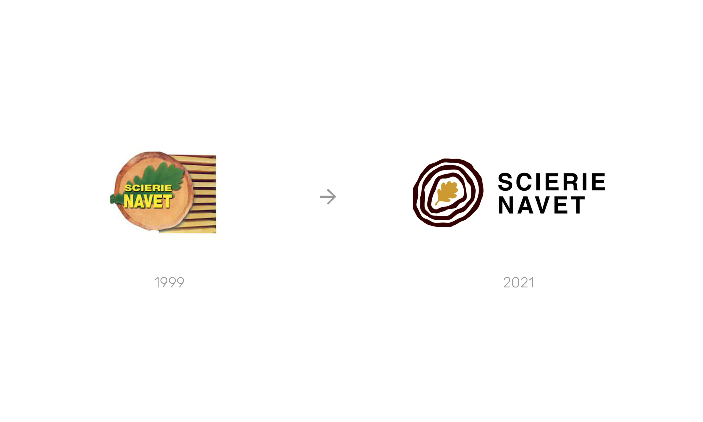
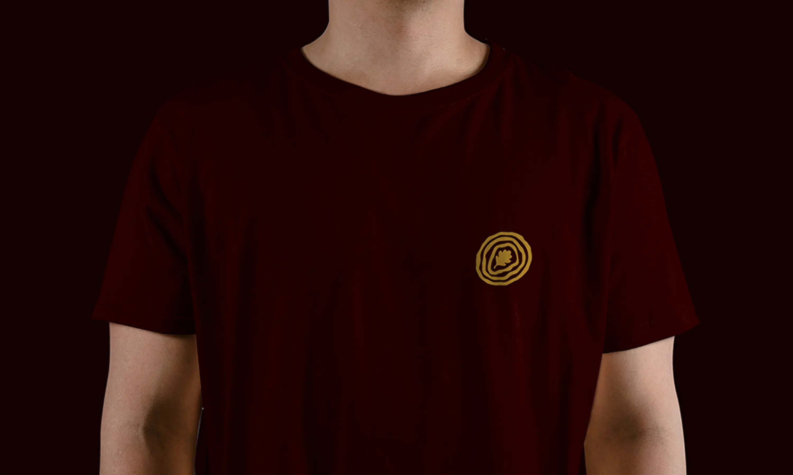
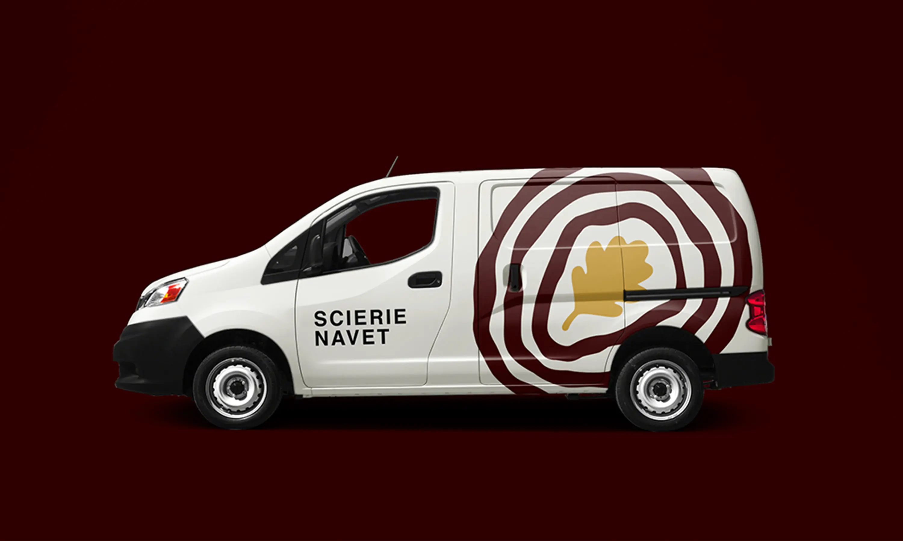

Scierie Navet
Logo Design
Une entreprise familiale
La Scierie Navet est située au coeur du Perche à Frétigny (Eure-et-Loir). Scierie de haute technologie, elle a évolué au fil de plusieurs générations familiales pour proposer des bois de grande qualité, issus de forêts de chênes gérées durablement.
Rajeunir l'identité visuelle
Après avoir été contacté par Benjamin, actuel gérant de la scierie, j'ai eu la chance de pouvoir visiter l'entreprise afin de m'imprégner du lieu, de ses produits et des valeurs qui y étaient transmises. L'ancien logo avait près de 20 ans et ne correspondaient donc plus aux nouvelles offres de la scierie.
Spécialiste du Chêne provenant majoritairement de la région française du Grand Ouest, j'ai souhaité réutiliser l'emblématique symbole de la feuille lobée du grand arbre. Centrée au milieu d'un tronc d'arbre, elle donne l'impression que les cernes émanent d'elles ou peut-être le contraire, qu'elles la font naître. En somme, un logo minimaliste, durable et facilement reconnaissable dans l'industrie du bois.
Année
Novembre 2021
Read in English 🇬🇧